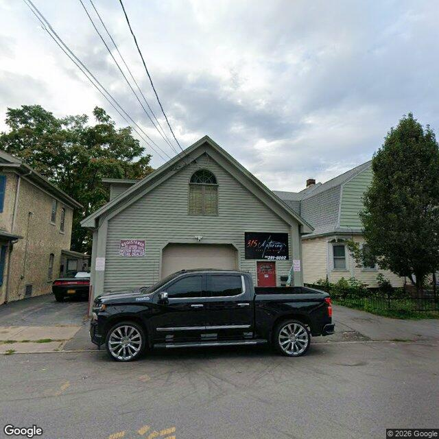

Property entry
407 Wolf St
Published 2026-11-20T19:04:54+00:00
Parcel key: 002-05-180

City records
Matches use parcel IDs or normalized property addresses. Nearby properties are not treated as matches. Records may include historical or closed cases; check each record's status and dates. Publication dates are not source-data dates.
Vacant properties 0
No matches stored for this feed. The feed or address matching may be incomplete; this is not confirmation that no records exist.
Records refreshed 2026-11-18.
Rental registry 0
No matches stored for this feed. The feed or address matching may be incomplete; this is not confirmation that no records exist.
Records refreshed 2026-11-18.
Code violations 1
- Latitude
- 43.07260038
- Longitude
- -76.16348144
- Neighborhood
- Washington Square
- ObjectId
- 146913
- SBL
- 002.-05-18.0
- complaint_address
- 407 Wolf St
Records refreshed 2026-11-18.
Unfit properties 0
No matches stored for this feed. The feed or address matching may be incomplete; this is not confirmation that no records exist.
Records refreshed 2026-11-18.
AI image observations (unverified)
These observations are generated from an image, not an inspection or an official code finding. No human verification is recorded here.
Image capture date: Not recorded. The entry publication date does not establish the age of the image.
Automated image description
{ "summary": "The image displays a mixed-use property with a commercial-style building featuring a garage door and an attached or adjacent residential-style structure, with some minor unmanaged vegetation visible along paved areas.", "property_type_guess": "mixed_use", "visible_conditions": [ "A two-story building with light green horizontal siding on the main facade, featuring a large garage door and an arched window in the gable.", "Commercial signage for '315 Motoring' and 'Registered Auto Repair' is visible on the front facade.", "An attached or adjacent structure, possibly residential in style, with yellow siding and a gambrel roof, is visible to the right.", "A paved driveway runs along the left side of the main building.", "Some unmanaged vegetation is present along the edge of the paved areas and near the street.", "A black pickup truck is parked in front of the main building, partially obstructing the view." blouses], "condition_scores": { "roof": "fair", "siding_or_facade": "fair", "windows_doors": "fair", "porch_or_entry": "fair", "yard_or_lot": "fair", "trash_debris": "none_visible", "vegetation_overgrowth": "minor" }, "visible_flags": { "boarded_windows_or_doors": "no", "fire_damage_visible": "no", "structural_damage_visible": "no", "vacancy_signs_visible": "no", "active_construction_visible": "no" }, "possible_unrecorded_issues": [ "Minor vegetation overgrowth along the paved areas and curb." ], "image_annotations": [ { "label": "Minor vegetation overgrowth", "reason": "Unmanaged growth along the edge of the paved driveway and curb.", "bbox": { "x": 0.70, "y": 0.65, "width": 0.20, "height": 0.10 }, "confidence": "high" } ], "needs_human_review": "false", "confidence": "high", "caveats": [ "A parked vehicle obstructs a portion of the main building's lower facade and driveway." ] }
Property type guess: unclear
Visible conditions
- No items reported.
Condition scores
No structured condition scores available.
Visible flags
No structured visible flags available.
Possible image-only flags
- No items reported.
AI review boxes
- No items reported.
Review reasons
- No items reported.
Image quality
- Available
- True
- Bytes
- 76250
- Needs Rerun
- False
ACS tract context
Census Tract 2; Onondaga County; New York
- Housing units
- 1686
- Median gross rent
- 146700
- Median household income
- 51848
- Poverty rate
- 28.1
- Renter-occupied share
- 50.1
- Total population
- 3511
- Vacancy rate
- 14.7
OpenStreetMap nearby
60 meter search radius
Nearby map data is temporarily unavailable. This does not mean there are no mapped features.